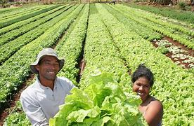

Regularização Fundiária e Ambiental
- Integração de bases de dados: Buscar a integração de diferentes sistemas de cadastro e registros fundiários para garantir a consistência e a atualização das informações sobre propriedades rurais.
- Emissão de títulos definitivos de propriedade: Priorizar a emissão de títulos de propriedade para regularizar a situação jurídica das propriedades, conferindo segurança aos proprietários e promovendo a formalização das áreas rurais.
- Implementação do Código Florestal: Garantir a aplicação das diretrizes estabelecidas no Código Florestal, promovendo a regularização ambiental das propriedades rurais, especialmente no que diz respeito à preservação de áreas de reserva legal e de preservação permanente.
- Planejamento estratégico: Desenvolver estratégias de planejamento territorial que considerem tanto a regularização fundiária quanto a regularização ambiental, buscando promover uma ocupação mais planejada e sustentável do território, especialmente em regiões sensíveis, como a Amazônia.
- Combate à ilegalidade: Atuar de forma efetiva no combate à ocupação ilegal do território, visando solucionar os conflitos fundiários existentes e reduzir a insegurança jurídica, especialmente em regiões com histórico de ocupação desordenada.
Iniciativas relacionadas

A intensificação da titulação de terras busca garantir segurança jurídica para quem vive e produz no campo.

Implementação do Programa Integrar Brasil Fundiário com objetivo de regularizar mais de 600 mil famílias em situação irregular